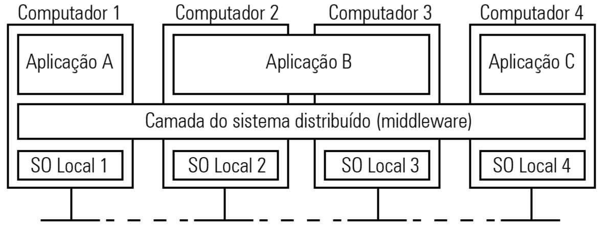
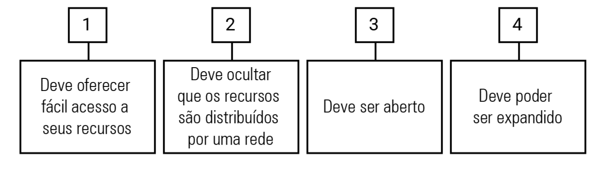
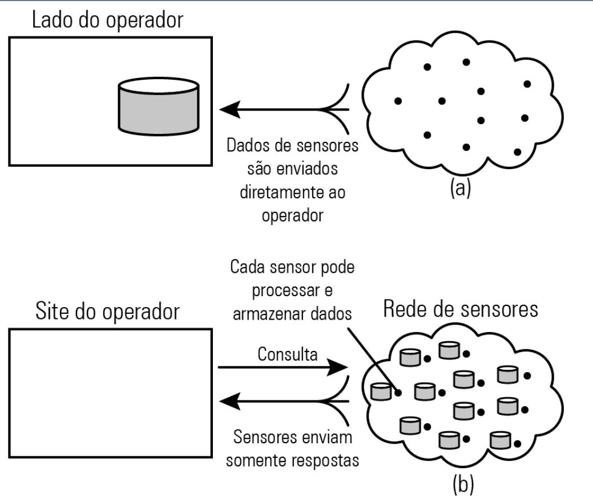

A computação, em seu estágio inicial, era focada na centralização de seu processamento, e os principais atores desse modelo foram o mainframe e os terminais de acesso. Com o passar do tempo, foi proposta uma mudança dessa arquitetura centralizada e rígida, através da descentralização do processamento, quando surgiram, então, os primeiros sistemas distribuídos.
Desde então, os sistemas distribuídos têm evoluído, sendo uma área da computação que se relaciona com o nosso dia a dia, por meio, por exemplo, de serviços e aplicações web, computação peer-to-peer e redes de sensores.
Este capítulo tem como objetivo contextualizar e apresentar os conceitos essenciais de sistemas distribuídos e, adicionalmente, fornecer uma visão geral sobre a linguagem de programação Python. Para atingir esse objetivo, o capítulo está dividido em três partes:
Você já parou para refletir como os sistemas distribuídos afetam direta mente a nossa vida? E como estão intimamente conectados com a forma que interagimos com as empresas, o comércio eletrônico e a sociedade?
É importante mencionar que existem várias definições de sistemas distribuídos presentes na literatura; dois elementos são comuns a todas elas: computadores e redes. De uma maneira geral, todas as definições concluem que sistemas distribuídos são computadores interligados em rede que se comunicam e coordenam suas ações através de mensagens. Neste capítulo, utilizaremos a definição de Tanenbaum e Van Steen (2008, p. 1): “Um sistema distribuído é um conjunto de computadores independentes que se apresenta a seus usuários como um sistema único e coerente”.
Portanto, o compartilhamento de recursos é um dos principais objetivos da existência dos sistemas distribuídos, e a distância não é um impeditivo para a interligação dos componentes, de modo que eles podem estar separados por qualquer distância: podem estar em diferentes continentes, regiões e prédios ou mesmo na mesma sala (COULOURIS; DOLLIMORE; KINDBERG, 2007).
Em vista disso, para que seja possível a comunicação entre os computadores e redes heterogêneas, proporcionando uma visão de sistema único, é necessária uma camada de abstração chamada de middleware. Na figura 1, é mostrado o sistema distribuído organizado como middleware, sendo possível visualizar quatro computadores interligados em rede e três aplicações (A, B e C). A aplicação B está sendo executada de maneira distribuída nos computadores 2 e 3. A camada de software (middleware) se estende por todas as máquinas, proporcionando a mesma interface para cada aplicação.
Para que fique clara a contextualização de um sistema distribuído, é importante mencionar exemplos reais. Alguns exemplos clássicos são: a internet, as intranets, as tecnologias baseadas em dispositivos móveis e as aplicações e os serviços baseados em computação em nuvem e internet das coisas.
Segundo Coulouris, Dollimore e Kindberg (2007), a internet é um conjunto de redes de computadores de diferentes tipos que são interligadas, permitindo que os usuários, onde quer que estejam, façam uso de diversos serviços, tais como: world wide web (www), transferência de arquivos, entre outros. Já a intranet faz parte da internet, porém é administrada de forma separada e com limites para que somente usuários internos e com permissão a acessem.
O Nic.Br é uma entidade sem fins lucrativos com funções administrativas e operacionais relativas ao domínio de internet “br”. Em seu canal oficial no YouTube, há uma série de vídeos explicando como funciona a internet, e destacamos estes dois:
Adicionalmente, recomendamos o vídeo “A internet das coisas”, também disponível no canal do Nic.Br, com um bom conteúdo sobre o tema
Sistemas distribuídos procuram atender às necessidades dos usuários, tais como desempenho, interoperabilidade, disponibilidade, entre outras. E para atender a essas necessidades de forma que a experiência seja positiva para o usuário, eles devem respeitar alguns requisitos básicos. Segundo Tanenbaum e Van Steen (2008), existem quatro metas importantes que devem ser cumpridas para que o esforço da implementação desses sistemas seja positivo. São elas:
Portanto, a utilização de sistemas distribuídos é diferente das soluções tradicionais de aplicações, devido ao fato de os componentes estarem separados por uma rede, evitando-se, assim, problemas de confiabilidade, segurança, heterogeneidade, latência, largura de banda e administrações.
Atender aos requisitos dos usuários e de aplicações é um fator fundamental para o sucesso de um sistema distribuído; portanto, é muito importante conhecer os desafios e mecanismos de melhorias. A Amazon Web Services é uma empresa líder no segmento de aplicações que utiliza sistemas distribuídos e conhece muito bem os desafios para uma correta implementação. Em seu site oficial, disponibilizou o artigo “Desafios com sistemas distribuídos”, de Jacob Gabrielson, para leitura.
Como já abordado anteriormente, os sistemas distribuídos são computadores independentes conectados por uma rede de comunicação, sendo que para o usuário final trata-se de um único dispositivo provendo serviço. Em relação ao objetivo desses sistemas, Tanenbaum e Van Steen (2008) dividem os sistemas distribuídos em três tipos:
O site top500.org mantém uma lista com os 500 computadores mais rápidos do mundo, na qual o Brasil aparece com o supercomputador Santos Dumont (SDumont), que possui um total de 18.144 núcleos de CPU, distribuídos em 756 nós computacionais com 64 GB de memória cada. Mais informações sobre o SDumont podem ser obtidas a partir de uma pesquisa simples em sites de busca, usando as palavras-chave “sdumont” e “machine”. Acesse o site top500.org, clique em “TOP500 LIST” e fique por dentro de tudo que acontece no universo dos supercomputadores.
Os sistemas de computação distribuídos têm como principal objetivo a execução de tarefas de computação de alto desempenho, divididas em dois subgrupos: computação de cluster e computação em grade.
A computação de cluster é constituída de hardwares, geralmente do mesmo tipo, denominados mestre e nó de comunicação, conectados por meio de uma rede local de alta velocidade, na qual um programa é executado em paralelo em várias máquinas.
Já na computação em grade os dispositivos são diferentes em relação ao hardware, ao software e à tecnologia empregada, com recursos de distintas organizações agrupados para permitir a colaboração de um grupo de pessoas.
O projeto Beowulf.org é um exemplo prático da computação de cluster. Trata-se de clusters de alta performance que utilizam hardware comum, rede e software aberto, com o objetivo de baratear custos em relação às soluções de mercado. Fazendo uma pesquisa simples em sites de busca com as palavras-chave “beowulf” e “cluster”, pode-se obter mais informações sobre o tema.
Já o projeto SETI@Home é um programa de computação em grade da Universidade da Califórnia que visa obter evidências de vida inteligente extraterrestre utilizando o processamento de mais de 330 mil computadores. Mais detalhes sobre esse projeto podem ser obtidos com uma pesquisa simples em sites de busca pela expressão “seti@home”.
A arquitetura cliente/servidor proporcionou a utilização de programas que eram executados diretamente no servidor, e, posteriormente, esse mesmo servidor enviava uma resposta aos seus clientes remotos.
Com o avanço da computação e a evolução do setor, esse modelo passou a não atender de forma satisfatória aos requisitos de novas demandas dos clientes, requerendo que as aplicações soubessem se comunicar entre si. Portanto, os dados envolvidos nas transações deveriam ser distribuídos entre vários servidores.
Assim, foi requerida a presença de um monitor de transação (TP monitor), responsável pela coordenação e execução da transação, com a função de permitir o acesso a vários servidores e bancos de dados.
Na figura 3, é descrita uma aplicação cliente que envia uma requisição, a qual chega ao monitor TP, que direciona para um dos três servidores disponíveis, retornando em seguida uma resposta para a aplicação cliente.
A necessidade de diálogo entre aplicações originou modelos diferentes de comunicação, destacando-se (TANENBAUM; VAN STEEN, 2008):
Os sistemas distribuídos pervasivos relacionam-se a sensores, que possuem características próprias, tais como: tamanho pequeno, alimentação por bateria, mobilidade, ausência de controle administrativo humano e conexão sem fio. Tais características são diferentes das que vimos até agora, que eram focadas em nós fixos, conexão permanente e alta qualidade da rede. Redes de sensores são um exemplo de sistema distribuído pervasivo, que pode monitorar condições ambientais, tráfego, aplicações médicas, entre outras aplicações.
figura 4 apresenta uma rede de sensores em duas partes. A parte (a) da figura exibe uma rede de sensores na qual os dados gerados pelos nós sensores são enviados diretamente para um banco de dados. Na parte (b), é possível visualizar os nós sensores armazenando as informações localmente, sendo que os sensores somente enviam respostas às consultas que são realizadas diretamente a eles.
